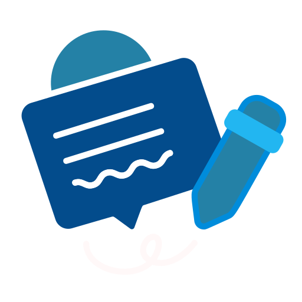

Project Name: Ethics Assessment — Vikram Bhetal

Project Brief:
The client wanted a narrative-driven assessment using moral dilemmas grounded in workplace policies.

Conducting Need Analysis:
I began with a detailed needs analysis to understand the requirement in depth. This included discussions with stakeholders to explore:
- Common gray-area decisions and failure patterns
- Relevant policies/processes to align
- Learning time constraints and delivery context

Findings from the Needs Analysis:

My Expertise in Action:
- Story weaving & branch design
- Feedback grammar & scoring
- Visuals & QA
- Packaging

Learning Design Strategy:
Branching narrative with “why it matters” nudges and immediate, doctrine-anchored feedback.
- Short scenario loops
- Clear rationales
- Retry options

The Outcome
Higher completion and discussion; stronger ethical reasoning.
Click on the video below to check out a few glimpses from the project.